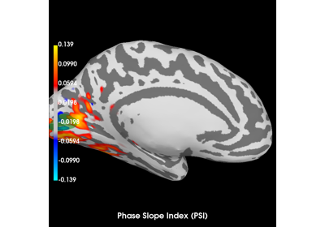
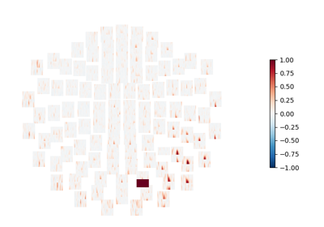

mne_connectivity.seed_target_indices#
- mne_connectivity.seed_target_indices(seeds, targets)[source]#
Generate indices parameter for seed based connectivity analysis.
Examples using mne_connectivity.seed_target_indices#

Compute Phase Slope Index (PSI) in source space for a visual stimulus
Compute Phase Slope Index (PSI) in source space for a visual stimulus

Compute coherence in source space using a MNE inverse solution
Compute coherence in source space using a MNE inverse solution

Compute multivariate measures of the imaginary part of coherency
Compute multivariate measures of the imaginary part of coherency

Compute seed-based time-frequency connectivity in sensor space
Compute seed-based time-frequency connectivity in sensor space